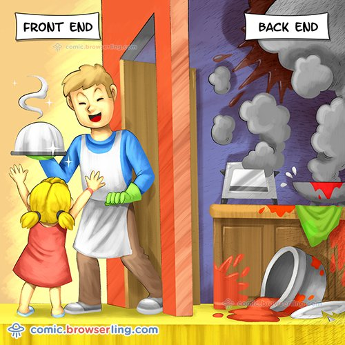
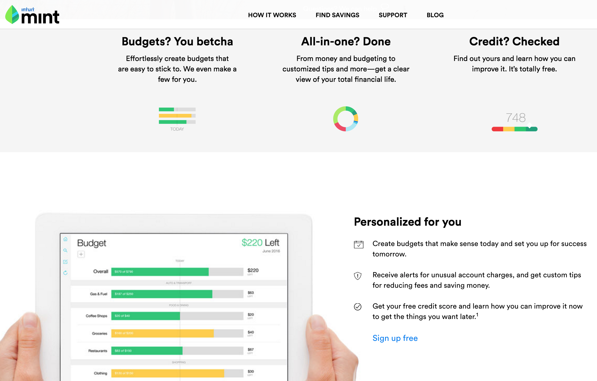
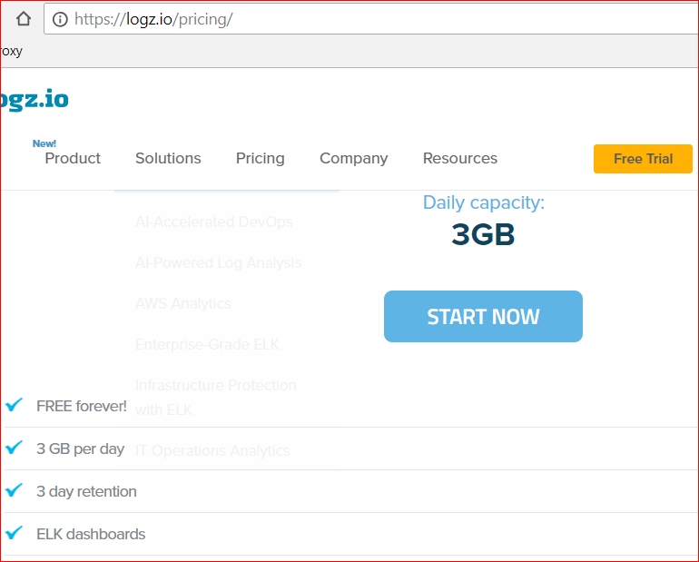
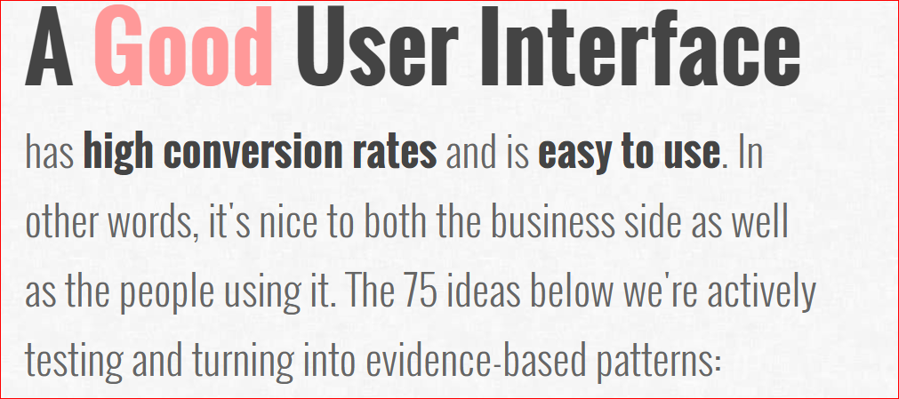
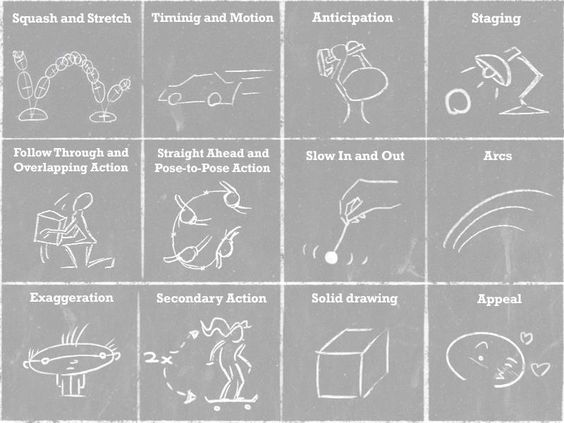
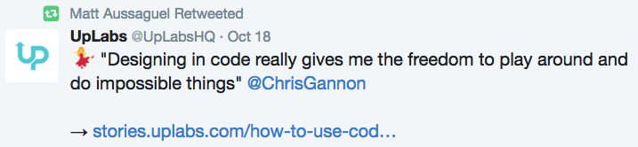
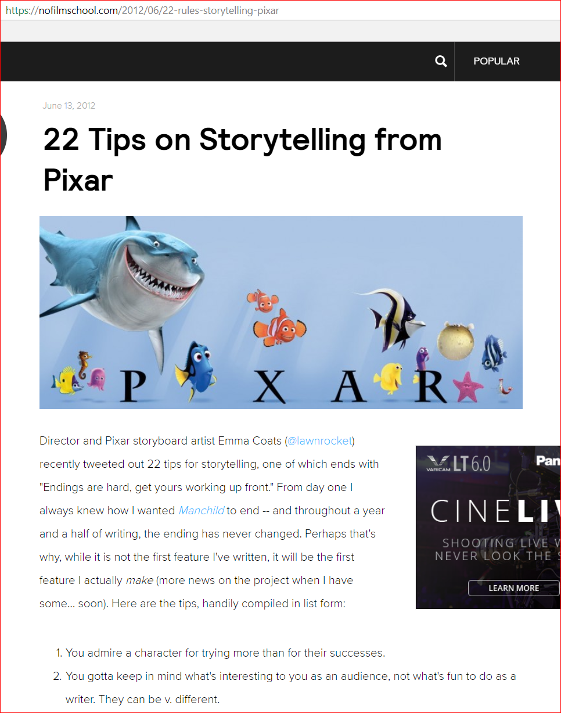
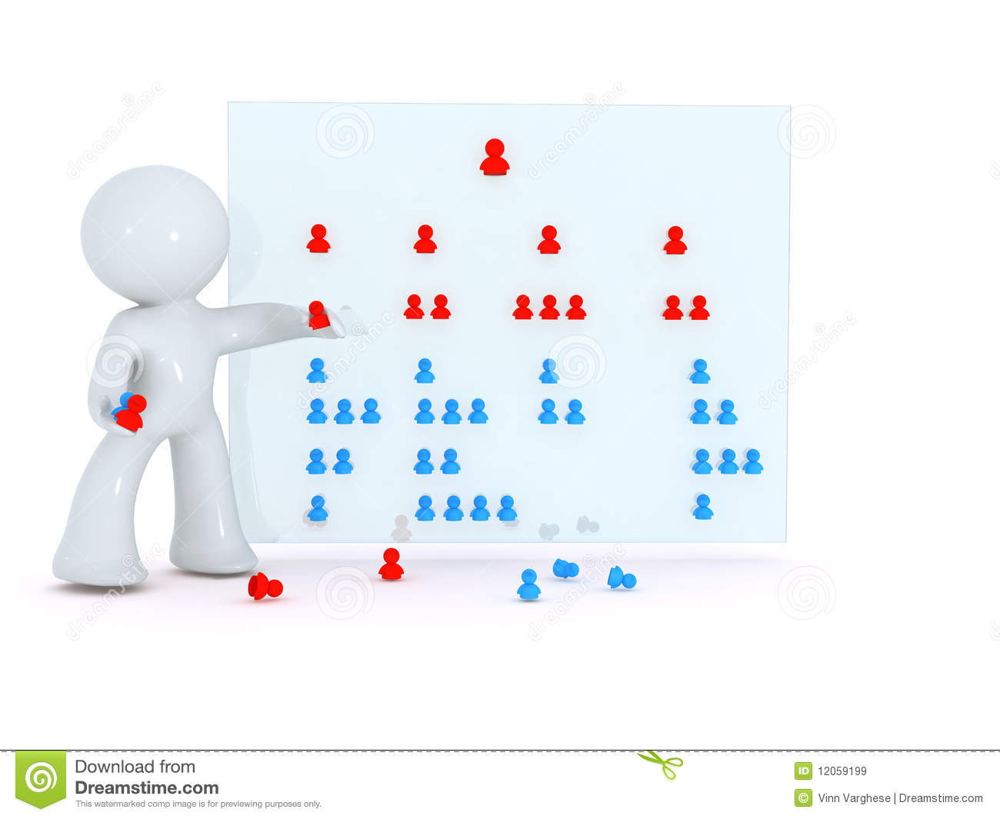

Summary and conclusion

Some of the Back end can be off shored. Some is an API.

Mint idea: enter banking info.
Found that if UI is nice, users would
Extreme cloud, know your TCO

Engaging UI
Can you make your app ....
Rapid development
Learn creative and design techniques

Reduce resource for back end
META bespoke admin|build|methodology®
10 practices of the confident tech META bespoke admin|build|methodology® manager:
Conclusion
- low code PHP creator hated to code. Now they have 40% share of WWW.
by:
- Decide to face the user or face the server. Avoid SSR. Focus is productivity in itself. Ex, turn towards the UX, face the customer.
- Have a productivity goal: ex 1 screen per day
- Extreme cloud, use spreadsheet, know lifetime costs
- Avoid 3 GL / Procedural / Algol = eschew js
- Instead of 'line count', 'review' based on UX
- Avoid resume based development
- No full stack: Convergence of dev and designer
- Rapid prototype / Prototype -> UX. So evaluate need for 'PDF' prototypes, like PhotoShop. You should count on your RAD. Instead look at User Stories plus Intercept/Observe.
- Intercept users early
- Mount a drive. In the cloud. With Docker. Running Express build server.
- Web IDE!
- LAMP: No L, A, M. Yes to P
- Remote friendly.
- Developers that love to code can be harmful.
- Nitro clod brew coffee.
- Avoid FTP. Mount (and cache)
Staff you don't need going forward 2 IOS developers 2 Android developers 2 Full stack/back end developers 1 Photoshop guy/hal
Staff you do need:
- Designer that codes, or a Front end developers that designers
- Build/release engineer(can be out sourced)
One last thing: We used to sell an accounting software. By running it, a company could fire some book keepers. The value. Meta = by using this approach - you can manage costs.
Goal: 10 X faster than today's development. Ex: 5 dev is 6 months will be done 2 devs in 3 weeks. Did we get there?